Loading ...
|
4-3-3
|
Colombia | 1 | - | 0 | Congo DR |
5-3-2
|
| HT 0-0 | ||||||
|
FIFA World CupWednesday 24 June 2026
|
||||||
- Venue
- Estadio Guadalajara
- Attendance
- 45,358
- Referee
- Maurizio Mariani
Yellow card56'
J. Lucumí
- 2
Substitution58'
L. Suárez
J. Córdoba
J. Rodríguez
J. Quintero
Goal76'
D. Muñoz
Assist: J. Quintero
Substitution77'
J. Arias
R. Ríos
Yellow card90+4'
J. Lerma
Whistle45+6'
45+6'
Substitution46'
N. Mukau
N. Sadiki
Substitution57'
C. Bakambu
S. Banza
- 2
Substitution72'
A. Masuaku
J. Kayembe
E. Kayembe
C. Pickel
Substitution82'
S. Moutoussamy
N. Mbuku
Yellow card90+3'
C. Pickel
Colombia | |
|---|---|
Goalkeeper | |
| 12 | C. Vargas |
Defender | |
| 2 | D. Muñoz 76' |
| 3 | J. Lucumí 56' |
| 17 | J. Mojica |
| 23 | D. Sánchez |
Midfielder | |
| 11 | J. Arias 77' |
| 14 | G. Puerta |
| 16 | J. Lerma 90+4' |
Forward | |
| 7 | L. Díaz |
| 10 | J. Rodríguez 58' |
| 25 | L. Suárez 58' |
Substitutes | |
| 6 | R. Ríos 77' |
| 9 | J. Córdoba 58' |
| 20 | J. Quintero 58' |
Congo DR | |
Goalkeeper | |
| 1 | L. Mpasi |
Defender | |
| 2 | A. Wan-Bissaka |
| 3 | S. Kapuadi |
| 4 | A. Tuanzebe |
| 22 | C. Mbemba |
| 26 | A. Masuaku 72' |
Midfielder | |
| 6 | N. Mukau 46' |
| 8 | S. Moutoussamy 82' |
| 25 | E. Kayembe 72' |
Forward | |
| 17 | C. Bakambu 57' |
| 20 | Y. Wissa |
Substitutes | |
| 7 | N. Mbuku 82' |
| 12 | J. Kayembe 72' |
| 14 | N. Sadiki 46' |
| 18 | C. Pickel 72'90+3' |
| 23 | S. Banza 57' |


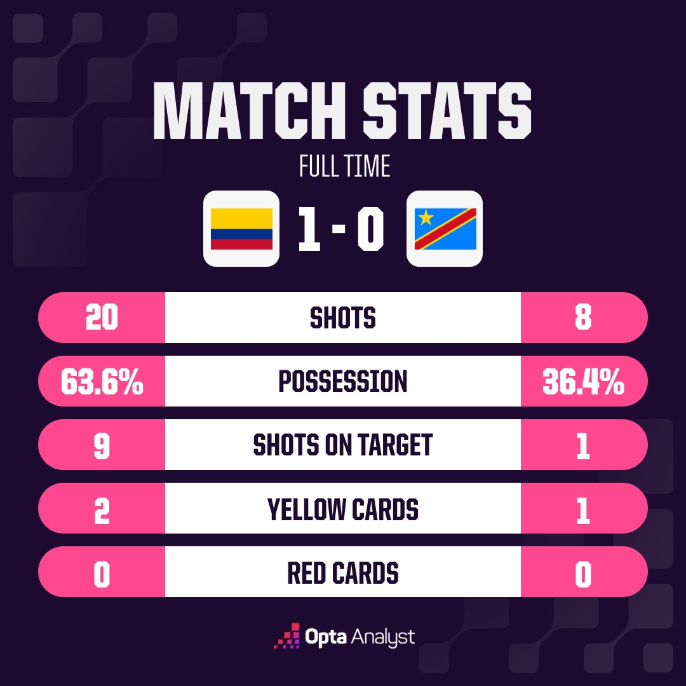
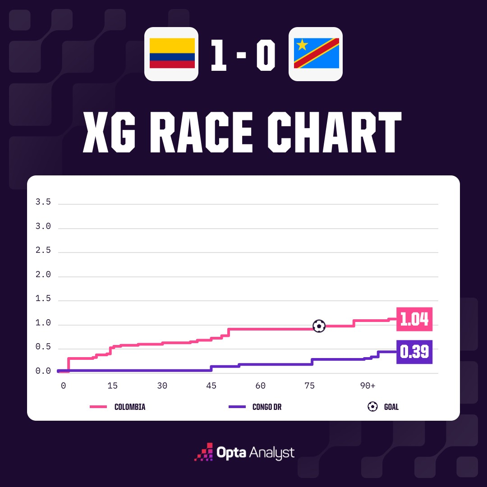
98'
Congo DR attempted 7 shots in this game, their lowest total in a single match in the 2026 FIFA World Cup.
98'
Congo DR have failed to win in their last 5 games in the FIFA World Cup, their longest winless streak in the competition (since at least 1965/1966).
98'
Colombia are undefeated in their last 5 games in the FIFA World Cup, their longest unbeaten streak in the competition (since at least 1965/1966).
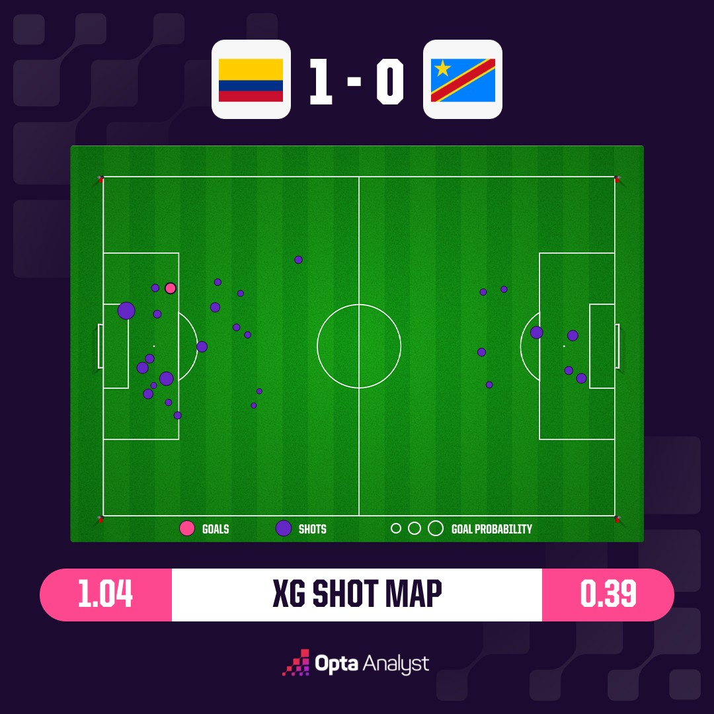
90+7'
FULL-TIME! The referee sounds the final whistle, and it’s all over. Colombia get the win, with a 1-0 triumph over Congo DR.
90+6'
MISS! The score remains 1-0, with Congo DR relieved after Colombia’s Juan Quintero goes for goal but sends their attempt off target. Not one to write home about, that one.
90+6'
Nathanaël Mbuku goes in on Richard Ríos and concedes a foul. The free-kick is not in a particularly dangerous area from Congo DR’s viewpoint, though.
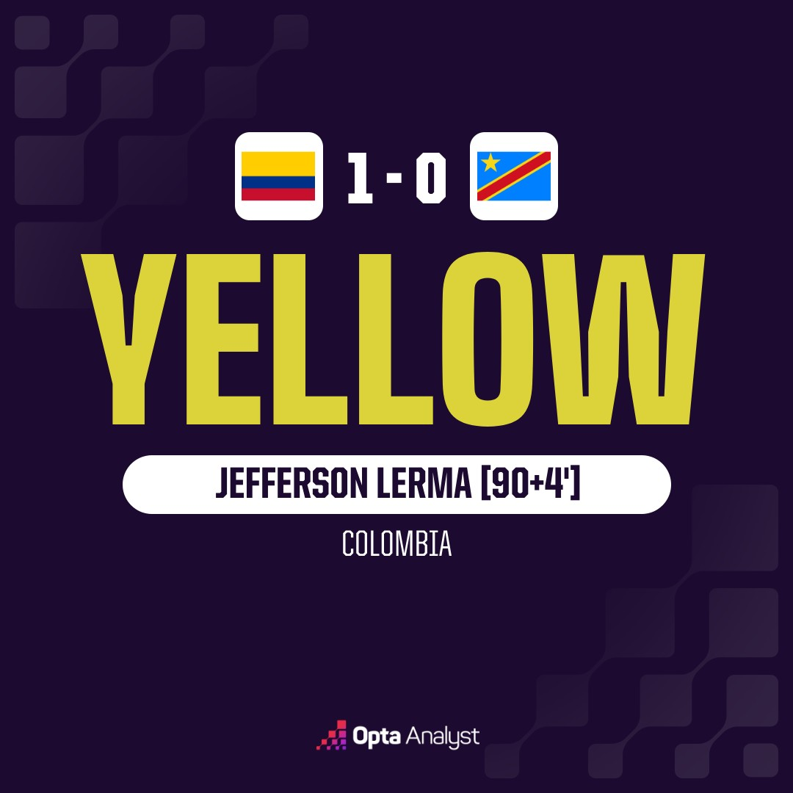
90+4'
BOOKING! Yellow card for Jefferson Lerma, who is penalised for a foul. The referee waves away their remonstrations, and now they will have to be careful.
90+4'
A rash challenge from Jefferson Lerma, who sends Nathanaël Mbuku tumbling, giving Congo DR a free-kick. It is not in a threatening position, but it gives them a chance to get back on the ball.
90+3'
That is a booking for Charles Pickel, who has received their first yellow card. They are not happy with the decision, but it is done now, and they will have to be careful for the rest of this game.
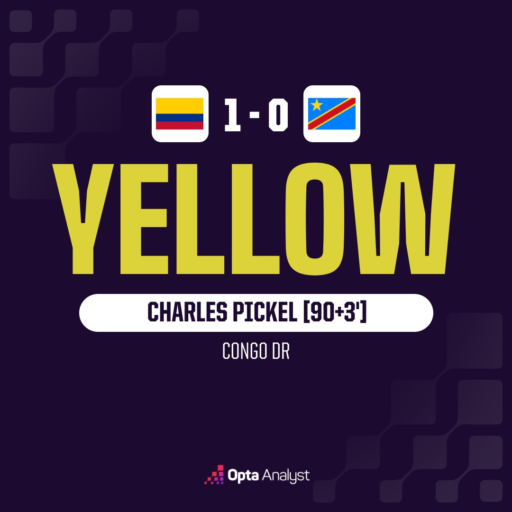
90+3'
A foul from Charles Pickel on Davinson Sánchez sees Colombia win a free-kick, but it is not in a dangerous position, so Congo DR should be confident they can defend it easily enough.
90+3'
Corner! The ball goes behind and now Congo DR will aim to deliver a good ball into the penalty area and test that Colombia defence, which has been frustrating them in recent minutes.
90+3'
A chance goes begging as Charles Pickel gets off a shot that does not hit the target. They might have done better with that one, but instead it is a goal-kick to Colombia.
90+1'
Nathanaël Mbuku's effort is deflected out for a corner. Can Congo DR make anything of this set-piece?
90+1'
It’s backs to the wall now — Colombia throwing everything into defending their advantage, with a flurry of crucial interventions.
90+1'
Richard Ríos goes in on Nathanaël Mbuku and concedes a foul. The free-kick is not in a particularly dangerous area from Colombia’s viewpoint, though.
89'
Great block from Richard Ríos, as they get in the way of an attempt from Joris Kayembe that might have been set to cause the goalkeeper some problems. Solid defending from the Colombia player.
88'
Luis Díaz goes in on Charles Pickel and concedes a foul. The free-kick is not in a particularly dangerous area from Colombia’s viewpoint, though.
86'
Gustavo Puerta has attempted 5 shots, his highest total in a single match in the FIFA World Cup.
86'
SAVE! A shot from outside the box by Colombia Gustavo Puerta was heading in, but Congo DR Lionel Mpasi keeps it out with a smart stop.
86'
Colombia win a corner after Gustavo Puerta sees a shot diverted wide by Charles Pickel. Can Colombia make this opportunity count, or will Congo DR defend this?
84'
Charles Pickel goes in on Gustavo Puerta and concedes a foul. The free-kick is not in a particularly dangerous area from Congo DR’s viewpoint, though.
83'
The Congo DR defence steps up in time and there is a frustration for Jhon Córdoba, who thought they were through until the flag goes up to signal offside.
82'
Free-kick! A foul from Simon Banza on Johan Mojica. It is well away from Congo DR’s goal, so it is unlikely to result in a chance for Colombia.
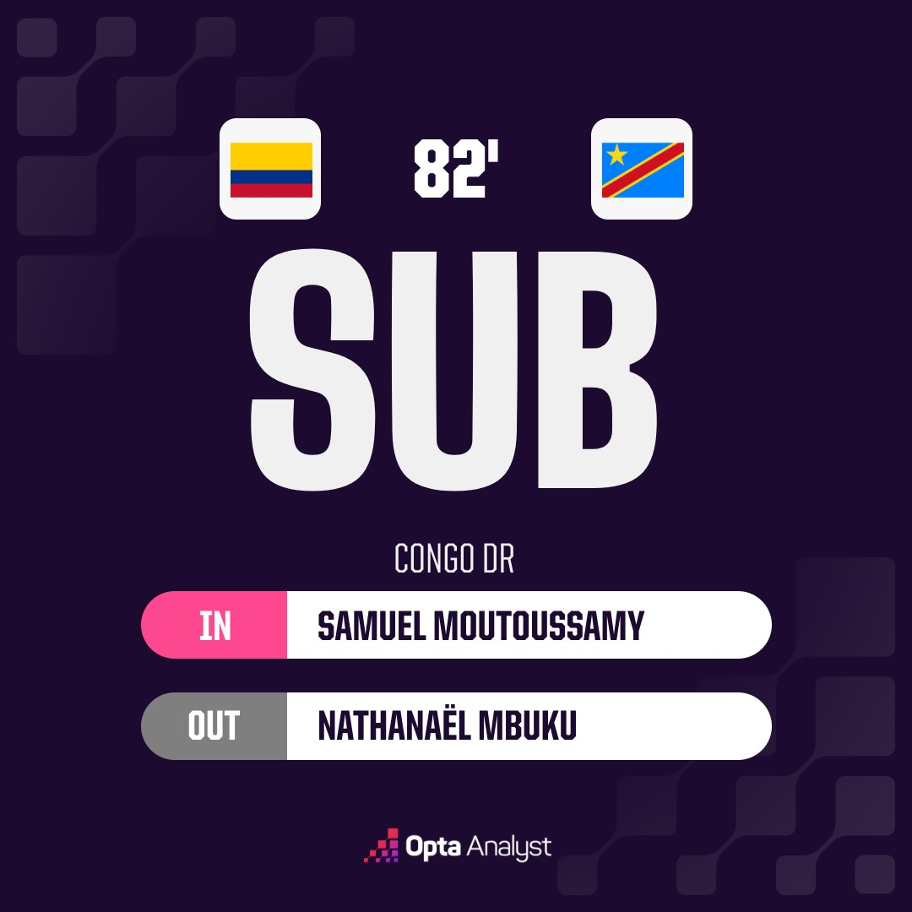
82'
The Congo DR manager is looking to the substitutes’ bench, bringing on Nathanaël Mbuku in place of Samuel Moutoussamy. Will the change make a difference? Let’s find out!
81'
Congo DR have not had a shot on target so far in this game.
80'
No luck – it’s offside! Luis Díaz looked to dart in behind and get on the end of a pass, yet they just went too early, and the flag is up to signal offside.
79'
A free-kick to Congo DR, as Luis Díaz goes in and fouls Chancel Mbemba. However, Colombia will not mind giving one away in this area too much, with plenty of distance to their goal.
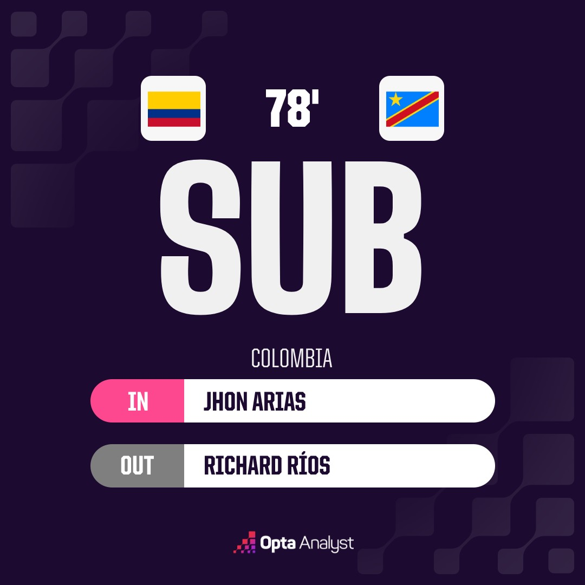
77'
Jhon Arias’s match is over as Colombia decide to make a substitution. Richard Ríos enters the field in what looks like a tactical change.
76'
Juan Quintero has assisted his first goal in the 2026 FIFA World Cup.
76'
Daniel Muñoz has scored his second goal of the 2025 FIFA World Cup this edition, more than any other Colombia player.
76'
GOAL! What a moment for Daniel Muñoz, who pops up with a huge, late goal for Colombia, finishing from inside the box. Can Congo DR find a way back into this one with such little time left?
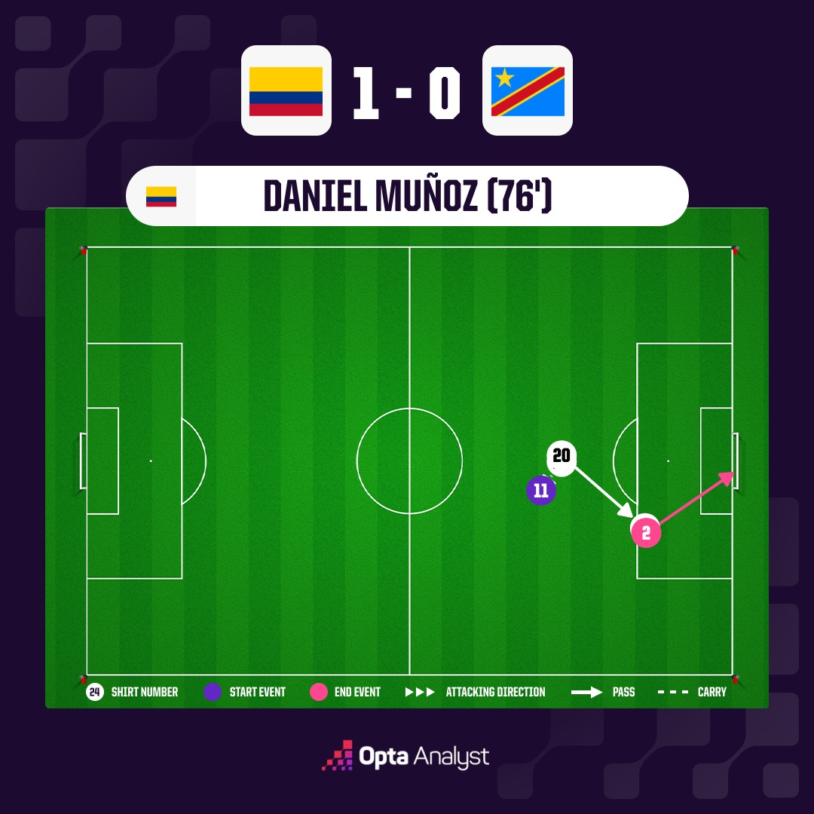
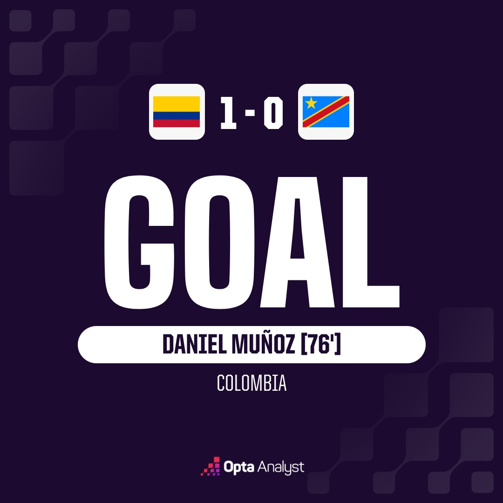
76'
Entering the final stages of this contest, let’s check on the possession stats for each team. It is Colombia who have had the more of the ball, with 67.15%, while Congo DR have had to settle for 32.85%. The score is 0-0.
75'
Luis Díaz makes a run in behind but the Congo DR defensive line were alert, and stepped up in time to catch them offside. That run just needed to be timed better.
74'
Great block from Jhon Lucumí, as they get in the way of an attempt from Yoane Wissa that might have been set to cause the goalkeeper some problems. Solid defending from the Colombia player.
73'
Neither team has had a shot in the past 10 minutes, as this match just enters something of a down period. Colombia have seen more of the ball, with 82 per cent possession, but Congo DR are keeping them away from goal. There is still a chance the match will spark into life, though.
72'
Congo DR are making a tactical change. Edo Kayembe is leaving the field and in their place comes Charles Pickel – we will soon see if this switch has the desired impact.
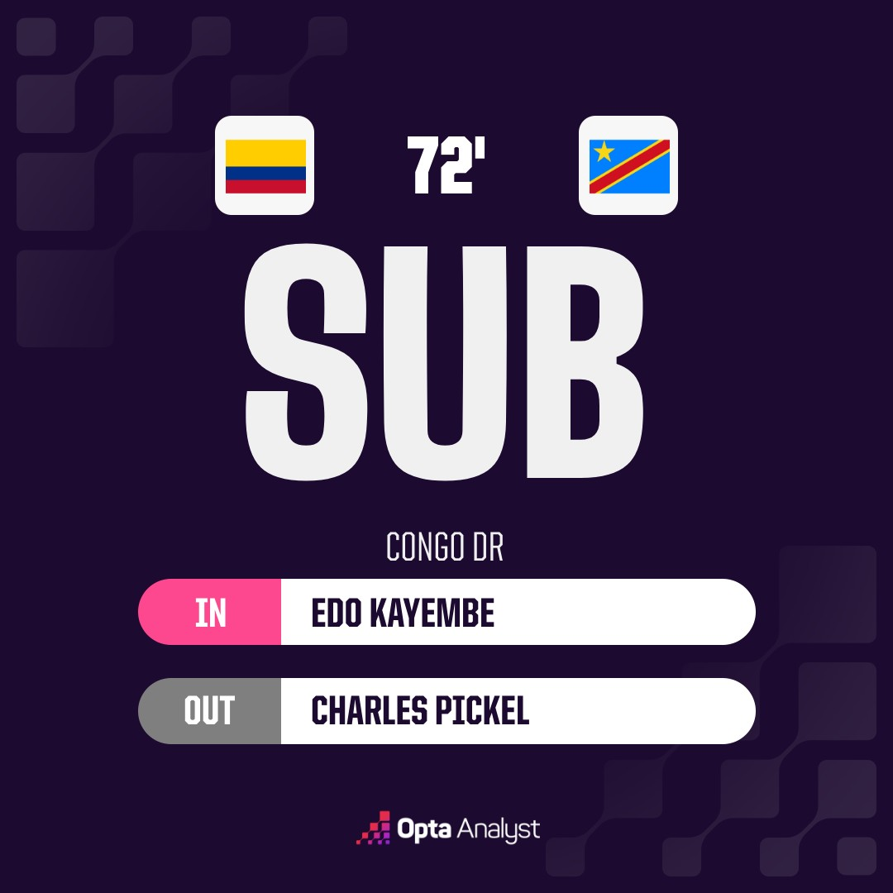
72'
A substitution for Congo DR sees Arthur Masuaku replaced by Joris Kayembe. There does not appear to be any obvious sign of an injury, so that is a tactical switch.
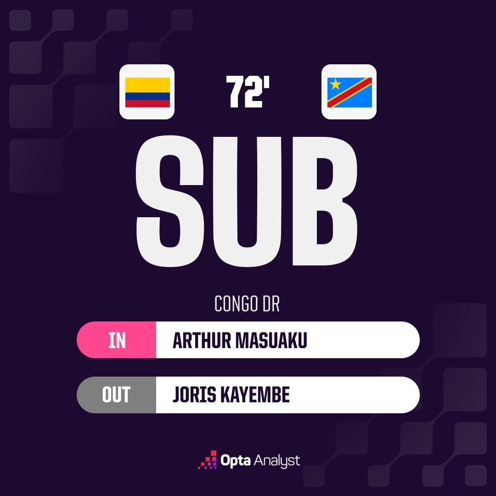
67'
A foul from Samuel Moutoussamy on Jhon Arias sees Colombia win a free-kick, but it is not in a dangerous position, so Congo DR should be confident they can defend it easily enough.
66'
A free-kick to Colombia, as Edo Kayembe goes in and fouls Johan Mojica. However, Congo DR will not mind giving one away in this area too much, with plenty of distance to their goal.
66'
This match is into the last 25 minutes now, and before it goes into the final stages, let’s check on the shots. There have been 19 in total – 3 from Congo DR, and 16 from Colombia. Of those attempts, 7 have hit the target – 0 from Congo DR and 7 from Colombia.
66'
In the last 15 minutes, it is Colombia who have dominated the ball, having seen 66.91% of the possession, yet they have not been able to go and turn that into a single shot, so there is no imminent sign of a goal.
65'
There is plenty of possession for Colombia, with 67.61% compared to Congo DR 32.39 % in the last 15 minutes. However, Colombia have not been able to turn that dominance of the ball into a goal.
64'
It is a corner now to Colombia, with Congo DR somewhat hanging on here as they look to hold out for a positive result. Can Colombia make something of this set-piece opportunity?
64'
This feels like a spell that could matter - Colombia earning repeated chances to swing it in from wide areas.
63'
Neither team has had a shot in the past 10 minutes, as this match just enters something of a down period. Colombia have seen more of the ball, with 77 per cent possession, but Congo DR are keeping them away from goal. There is still a chance the match will spark into life, though.
63'
Samuel Moutoussamy goes in on Jhon Córdoba and concedes a foul. The free-kick is not in a particularly dangerous area from Congo DR’s viewpoint, though.
62'
Luis Díaz makes a run in behind but the Congo DR defensive line were alert, and stepped up in time to catch them offside. That run just needed to be timed better.
62'
This could be a chance for Colombia, after Steve Kapuadi fouls Gustavo Puerta, handing them a free-kick in a threatening area. A good set-piece from here could really test the Congo DR defense!
61'
Edo Kayembe goes in on Jefferson Lerma and concedes a foul. The free-kick is not in a particularly dangerous area from Congo DR’s viewpoint, though.
58'
Substitution! Juan Quintero replaces James Rodríguez for Colombia as the manager shuffles the pack. Can Juan Quintero make an impression as this match continues?
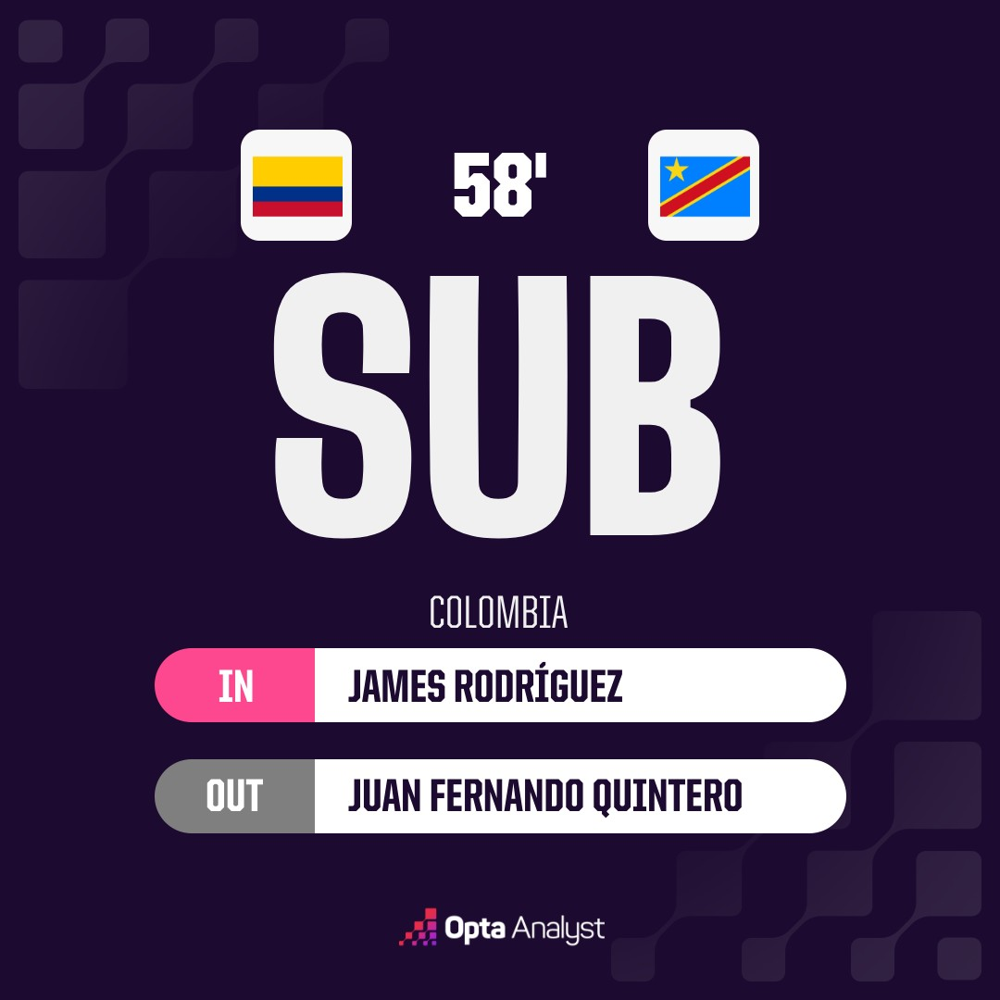
58'
Luis Suárez’s match is over as Colombia decide to make a substitution. Jhon Córdoba enters the field in what looks like a tactical change.
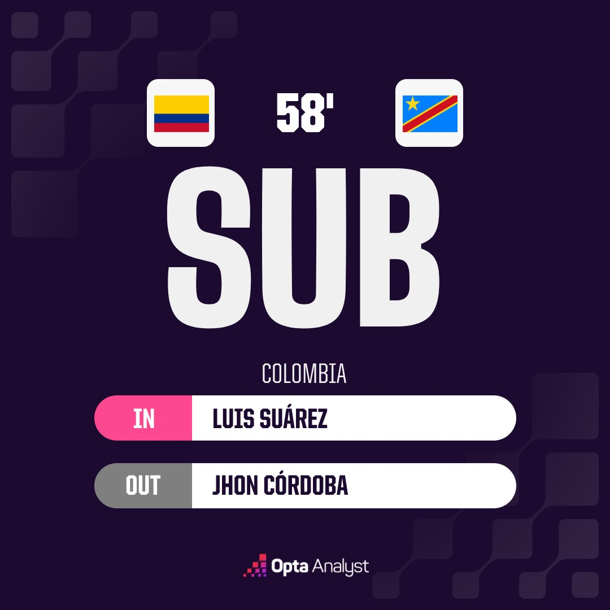
57'
The Congo DR manager is looking to the substitutes’ bench, bringing on Simon Banza in place of Cédric Bakambu. Will the change make a difference? Let’s find out!
56'
BOOKING! Yellow card for Jhon Lucumí, who is penalised for a foul. The referee waves away their remonstrations, and now they will have to be careful.
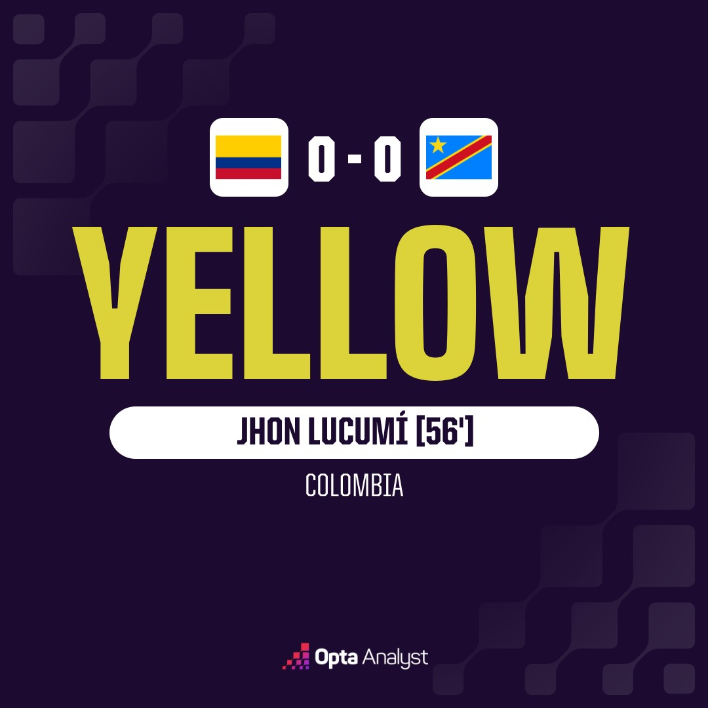
56'
This could be a chance for Congo DR, after Jhon Lucumí fouls Yoane Wissa, handing them a free-kick in a threatening area. A good set-piece from here could really test the Colombia defense!
56'
A rash challenge from Luis Díaz, who sends Chancel Mbemba tumbling, giving Congo DR a free-kick. It is not in a threatening position, but it gives them a chance to get back on the ball.
54'
A free-kick to Colombia, as Axel Tuanzebe goes in and fouls Luis Suárez. However, Congo DR will not mind giving one away in this area too much, with plenty of distance to their goal.
53'
No luck! Samuel Moutoussamy takes on a shot that, had they got it right, might have been set to test the goalkeeper, but instead it is sent off target and Colombia come away unscathed.
52'
A rash challenge from Luis Suárez, who sends Axel Tuanzebe tumbling, giving Congo DR a free-kick. It is not in a threatening position, but it gives them a chance to get back on the ball.
50'
No luck! Jhon Arias takes on a shot that, had they got it right, might have been set to test the goalkeeper, but instead it is sent off target and Congo DR come away unscathed.
50'
Luis Díaz has attempted 5 shots, his highest total in a single match in the FIFA World Cup.
50'
WHAT A MISS! Oh dear, oh dear, that is an awful attempt from Luis Díaz, as a huge chance for Colombia to score the goal they need goes begging. What a let off for Congo DR, though. They will have to defend better than that from here on out!
50'
James Rodríguez has created 5 chances, his highest total in a single match in the FIFA World Cup.
50'
Corner! Colombia are pushing for a goal and now they have an opportunity from this set-piece.
46'
Substitution! Noah Sadiki replaces Ngal'ayel Mukau for Congo DR as the manager shuffles the pack. Can Noah Sadiki make an impression as this match continues?
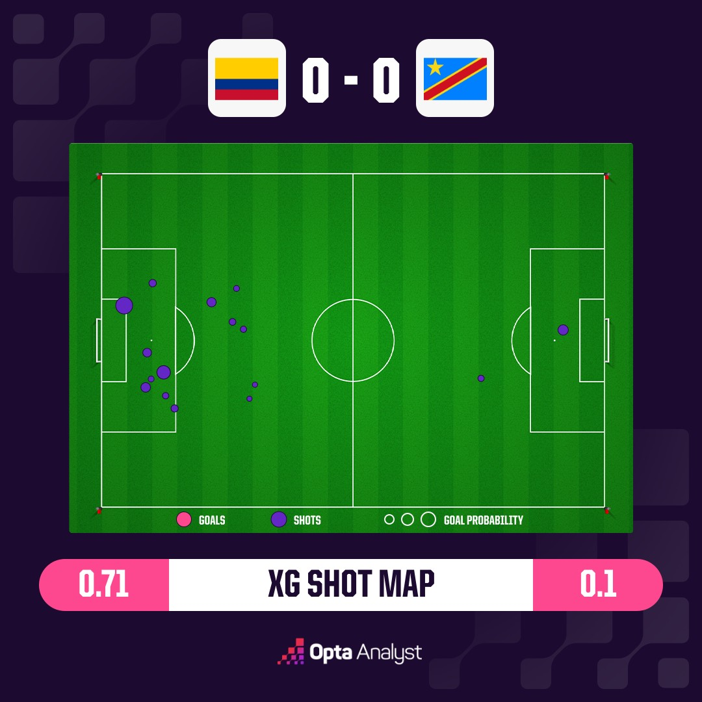
45+6'
Half-time! The referee blows the whistle and it is time for the interval. As we reach the break it is Colombia 0-0 Congo DR at Estadio Guadalajara.
45+5'
Decision overturned! The referee’s original call is deemed to be wrong by VAR, and after a check, it has been changed. The technology has played a major role there.
45+5'
Colombia have had plenty of the ball in the last 15 minutes, with 65.17% possession compared to just 34.83 % for their opponents. However, there’s not been any goal to come from that possessional dominance just yet.
45+5'
This decision may not stand, as it is going to VAR. The referee has stopped the play while his video assistant reviews the incident.
45+3'
Shot blocked! Gustavo Puerta unleashes an attempt at goal, but the ball does not reach its target thanks to Steve Kapuadi, who makes a solid block to stem the danger – for now.
45+1'
That might have been going in! A fantastic block from Axel Tuanzebe, who gets in the way of a goal-bound effort from Luis Díaz. Would the goalkeeper have been beaten? We will never know.
45+1'
MISS! The score remains 0-0, with Colombia relieved after Congo DR’s Cédric Bakambu goes for goal but sends their attempt off target. Not one to write home about, that one.
44'
A chance now for Congo DR to get a good delivery into the box, after the ball is diverted behind for a corner. Congo DR have been pushing for what would be a key goal, but Colombia have stood firm so far.
41'
Axel Tuanzebe goes in on James Rodríguez and concedes a foul. The free-kick is not in a particularly dangerous area from Congo DR’s viewpoint, though.
41'
BLOCK! An intervention from Chancel Mbemba might have just prevented a goal, with the defending player getting in the way of an attempt from Luis Suárez. Solid defending there!
41'
Congo DR have not had a shot on target so far in this game.
39'
A foul from Davinson Sánchez on Ngal'ayel Mukau sees Congo DR win a free-kick, but it is not in a dangerous position, so Colombia should be confident they can defend it easily enough.
39'
Save! A big stop from Lionel Mpasi, who reacts to keep out Davinson Sánchez's attempt from inside the area.
38'
Edo Kayembe goes in on James Rodríguez and concedes a foul. The free-kick is not in a particularly dangerous area from Congo DR’s viewpoint, though.
35'
Corner! Congo DR are pushing for a goal and now they have an opportunity from this set-piece.
31'
A rash challenge from Gustavo Puerta, who sends Ngal'ayel Mukau tumbling, giving Congo DR a free-kick. It is not in a threatening position, but it gives them a chance to get back on the ball.
31'
Great block from Chancel Mbemba, as they get in the way of an attempt from Luis Díaz that might have been set to cause the goalkeeper some problems. Solid defending from the Congo DR player.
31'
Colombia have had plenty of the ball in the last 15 minutes, with 83.92% possession compared to just 16.08 % for their opponents. However, there’s not been any goal to come from that possessional dominance just yet.
31'
It has been 30 minutes since Congo DR last attempted a shot in this game.
28'
Samuel Moutoussamy goes in on Gustavo Puerta and concedes a foul. The free-kick is not in a particularly dangerous area from Congo DR’s viewpoint, though.
25'
Daniel Muñoz goes in on Edo Kayembe and concedes a foul. The free-kick is not in a particularly dangerous area from Colombia’s viewpoint, though.
24'
Colombia have attempted the last 9 shots in this game, Congo DR last shot was taken by Edo Kayembe in the first minute.
24'
BLOCKED! That was close. Luis Díaz got off a shot, which was heading in, but Axel Tuanzebe was on hand to make a vital intervention. Great block!
21'
A free-kick to Colombia, as Steve Kapuadi goes in and fouls Gustavo Puerta. However, Congo DR will not mind giving one away in this area too much, with plenty of distance to their goal.
19'
A free-kick to Congo DR, as Daniel Muñoz goes in and fouls Arthur Masuaku. However, Colombia will not mind giving one away in this area too much, with plenty of distance to their goal.
19'
Lionel Mpasi has made 5 saves, his highest total in a single match in the FIFA World Cup.
19'
Save! A long-range strike from Gustavo Puerta was heading in, but Lionel Mpasi got to it to parry it away from danger.
17'
MISS! A shot from Gustavo Puerta ends up being off target. They might have done a bit better with that one, but it remains Colombia 0-0 Congo DR.
16'
CORNER! The pressure is building for Colombia as they win a set-piece after Luis Díaz's attempt is blocked by Lionel Mpasi and diverted out of play.
16'
There is plenty of possession for Colombia, with 65.38% compared to Congo DR 34.62 % in the last 15 minutes. However, Colombia have not been able to turn that dominance of the ball into a goal.
15'
Lionel Mpasi is called into action to keep out a shot from outside the box by Johan Mojica. The effort from the Colombia player was on target, but Congo DR shot-stopper got to it.
13'
That’s offside! A switched-on defensive line from Congo DR, as they step up at the right time to catch Luis Díaz offside, and the assistant referee’s flag is up.
12'
That is a disappointing effort from Jhon Lucumí, who went for glory but got their attempt wrong, and the shot sailed off target. A frustrating moment for Colombia.
11'
James Rodríguez's effort is deflected out for a corner. Can Colombia make anything of this set-piece?
6'
That’s offside! A switched-on defensive line from Congo DR, as they step up at the right time to catch Daniel Muñoz offside, and the assistant referee’s flag is up.
6'
A free-kick to Colombia, as Cédric Bakambu goes in and fouls Jefferson Lerma. However, Congo DR will not mind giving one away in this area too much, with plenty of distance to their goal.
4'
MISS! How has that not gone in? A complete lack of composure shown from Daniel Muñoz, who squanders a golden chance for Colombia, whose coach looks on frustrated from the touchline. A real let off for Congo DR!
4'
Save! A big stop from Lionel Mpasi, who reacts to keep out Jhon Arias's attempt from inside the area.
3'
No luck – it’s offside! Luis Díaz looked to dart in behind and get on the end of a pass, yet they just went too early, and the flag is up to signal offside.
1'
No luck! Edo Kayembe takes on a shot that, had they got it right, might have been set to test the goalkeeper, but instead it is sent off target and Colombia come away unscathed.
1'
KICK-OFF! And here we go! We are up and running in this clash between Colombia and Congo DR at Estadio Guadalajara. Stay tuned for all the action as it happens!
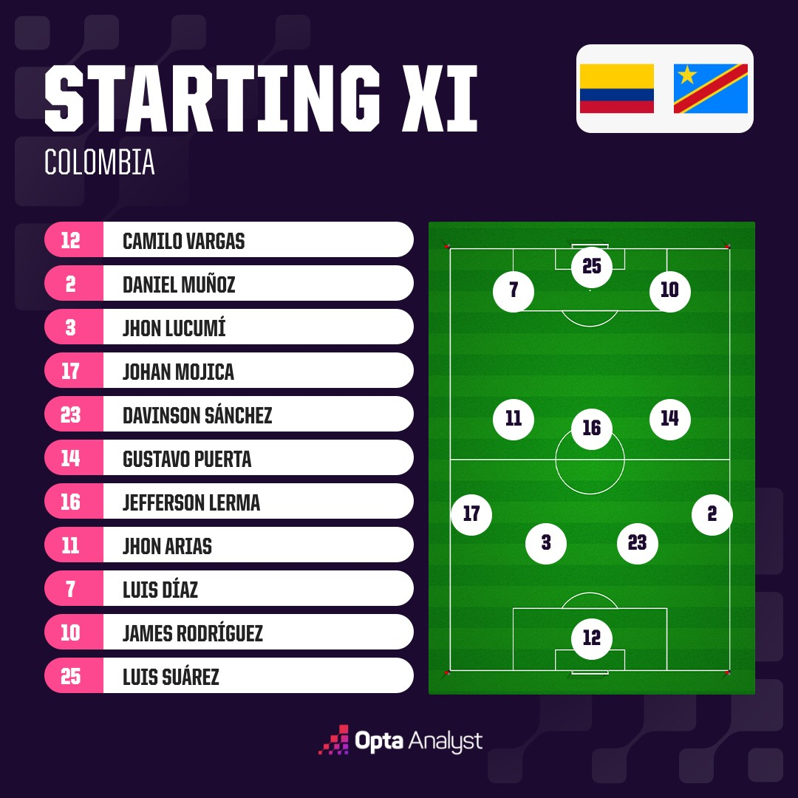
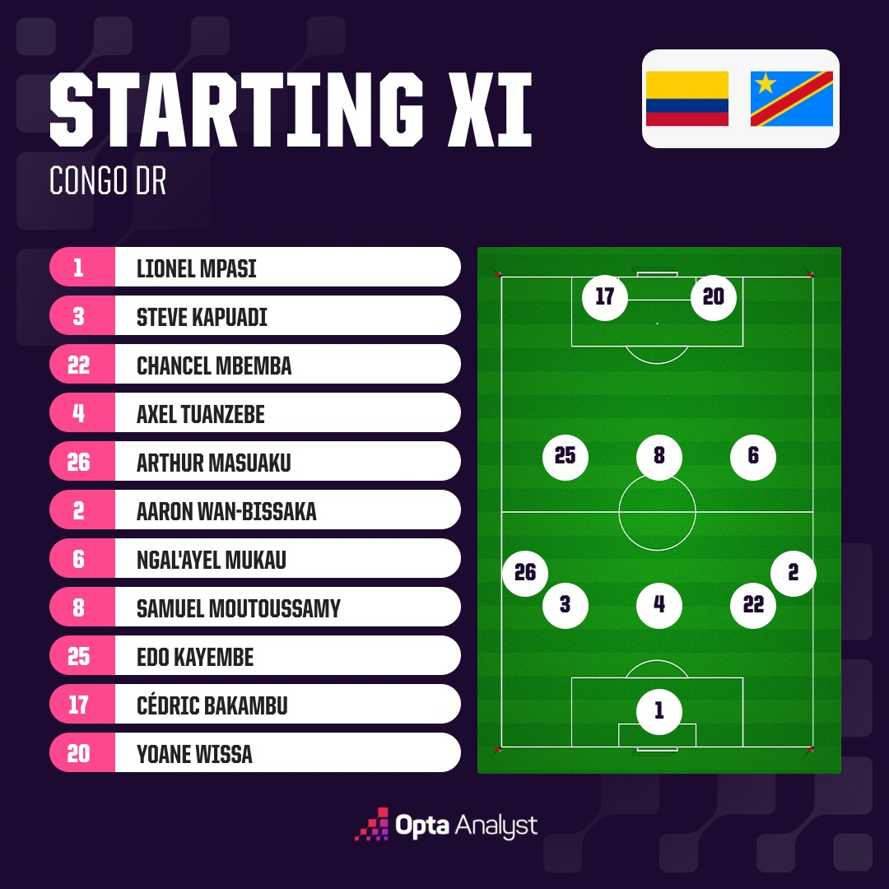
Congo DR have drawn their last 3 matches in a row
Colombia will look to protect their perfect start early in the FIFA World Cup group stage when they face Congo DR at Estadio Guadalajara on Tuesday.
Colombia's opening World Cup group stage match saw them triumph 3-1 over Uzbekistan on June 17. Daniel Muñoz, Luis Díaz, and Jaminton Campaz were on the scoresheet in the win. They have three consecutive wins in all competitions. In five games this year, they have three wins and two losses.
Congo DR played out a 1-1 draw against Portugal in their opening World Cup game, a June 17 group stage clash at Houston Stadium, prolonging their winless streak to three. Yoane Wissa scored in the draw. In 2026, they have won two, drawn two, and lost two.
Colombia are atop the group on three points, while Congo DR's one point places them second. Elsewhere in the group, Portugal are sitting third on one point. Uzbekistan are fourth on zero points.
Muñoz, Díaz, and Campaz share the early World Cup scoring lead for Colombia after each netting against Uzbekistan. With a goal against Portugal, Wissa is the early leading World Cup scorer for Congo DR.
In their last six matches in all competitions, Colombia have won four and lost two. The Colombian side scored 13 and conceded seven in that period, scoring first in five of the six contests. They had five first-half goals, while their opponents netted five times in the first 45 minutes. Congo DR have won two, drawn two and lost two in their last six. The Congo DR side scored five and conceded four in that period, netting first in two of the six. They had two goals in the first half, while their opponents netted one time before the break.
-
General
Possession 63.5% 63.54336.45736.5% Possession lost in defensive half 24 244242 Possession lost in middle third 49 494545 Duels 83 838282 Duels success rate 56.6% 56.62742.68342.7% Aerial duels 28 282828 Aerial duels won 67.9% 67.85732.14332.1% Successful dribbles 3 300 Fouls won 16 161212 Offsides 7 700 Corner awarded 5 544 -
Distribution
Passes 541 541299299 Long passes 66 664848 Long passes proportion (%) 12.2% 12.216.05416.1% Passing accuracy 87.4% 87.43175.58575.6% Passes in opponents' half 311 311139139 Passing accuracy in opponents' half (%) 82.0% 81.99461.87161.9% Total passes in the final third 158 1586868 Passing accuracy in final third (%) 73.4% 73.41848.52948.5% Forward passes 330 330204204 Forward passes (%) 61.0% 60.99868.22768.2% Through balls 0 000 Final third entries 63 633737 Penalty area entries 29 292222 Total open play crosses 7 799 Crosses 12 121414 Crossing accuracy 25.0% 2528.57128.6% -
Attack
Goals 1 100 Shots 20 2077 Shots on target 9 911 Blocked shots 6 622 Headed shots 2 211 Shots outside the box 9 944 Shots inside the box 11 1133 Shots accuracy excluding blocked shots 64.3% 64.2862020.0% Shooting accuracy 45.0% 4514.28614.3% Key Passes 14 1477 -
Defence
Tackles 10 101515 Tackles success rate 60.0% 6066.66766.7% Clearances 18 181919 Interceptions 10 1077 Recoveries 43 433737 Attacking third recovery 3 311 Defensive third recovery 19 192525 Midfield third recovery 21 211111 Recoveries in attacking half (%) 7.0% 6.9772.7032.7% -
Discipline
Fouls conceded 12 121616 Yellow cards 2 211 Red cards 0 000